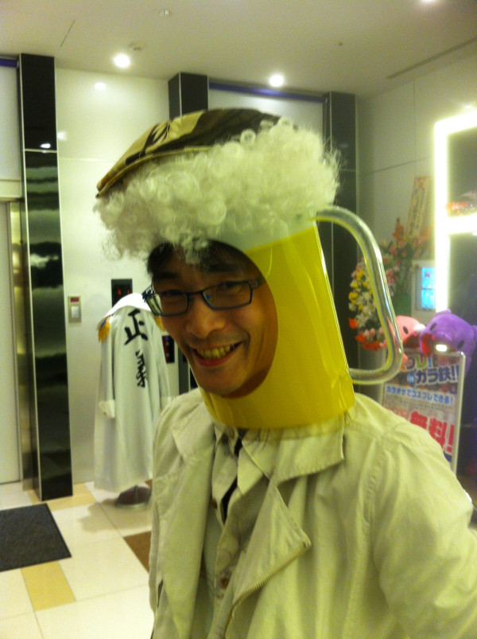

Si vous avez vu la section sur Junko vous vous êtes sûrement (pas) demandé quel est donc Touhou Project. Bah je vais y répondre car même si vous ne vous êtes pas posé cette question j'allais le faire c'est mon site j'ai le droit.
Donc Touhou Project est un jeu de bullet hell (shoot em up avec BEAUCOUP plus de trucs à esquiver) créé par une seul et même personne : notre grand dieu ZUN.
(Je sais il a une tête de vainqueur)
Donc Touhou parle d'aventures fantaisistes qui arrivent à Gensokyo (endroit où toutes les créatures de mythologies japonaises (ou autre parfois) vivent). Et ici quand il y a un combat ça ne se règle pas au combat à mort ça se règle à une bataille de spell cards (Les spells cards sont des attaques composées de sphères d'énergies et de rayons lasers). Et la personne qui n'a plus de spell cards perds.
Déjà c'est cool y'a pas de morts (car oui la règle numéro une d'une bataille de spellcards est de ne pas tuer l'adversaire).
Mais bon dans les jeux on incarne une héroïne nommé Reimu Hakurei résolvant des incidents qui peuvent être: un épais brouillard écarlate étrange, une nuit infinie ou même l'envahissement de la Lune
Lors de notre aventure notre héroïne peut se retrouver nez à nez à des personnes qui sont : soit des personnes que Reimu prends pour un ennemi, une personne qui trouve que le meurtre c'est drôle ou juste une personne qui garde l'endroit
Et c'est là que les batailles de spellcards commencent. même si la personne ne meurt pas les combats peuvent être très dur en voici un exemple
Et à la fin on arrive au dernier niveau (le niveau 6) et on rencontre la personne à l'origine de l'incident, la grande méchante principale, l'antagoniste de l'extrême, la personne dont son niveau est beaucoup plus dur que celui que je vous ais montré. En voici un pour l'exemple
Ce jeu possède 4 modes de jeu: Facile pour les enfants qui ont peur de perdre,Normal pour les personnes normales, Dur pour les expérimentés et Lunatic pour les dieux
Si vous finissez le jeu dans un mode entre Normal et Lunatic vous pourrez accéder au niveau extra ou le niveau de difficulté est supérieur au niveaux que je vous ais montré
Ce que j'aime bien avec ces jeux est que les musiques sont très bonnes,les personnes sont assez bien narré et j'aime bien tester mes réflexes. Surtout que sans ça j'aurais sûrement voulu devenir ce que je veux être.
Donc c'est tout pour la présentation merci pour l'avoir regardé et si avez étrangement cliqué dans le mauvais ordre voici le bouton pour revenir au menu principal
FORMULAIRE BONUUUUUUUUUUUUUUUS
Il serait mieux que je connaisse les personnes qui regardent mon site non ?
Yeah.